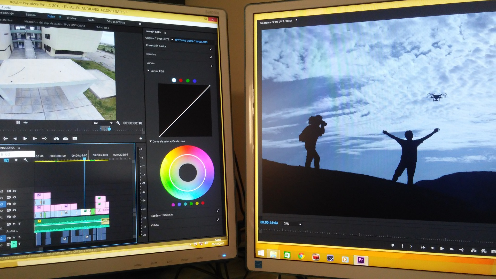
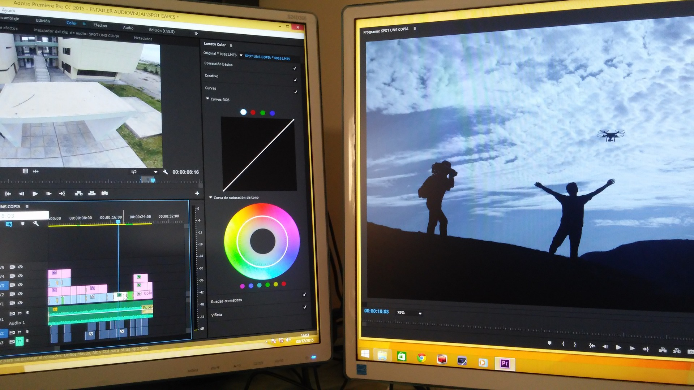

Video/Photo Editing
Get Creative!
 

General Information
Video cutting refers to the process of removing or trimming certain sections of a video. This can be useful for a variety of purposes, such as removing unnecessary or irrelevant footage, creating shorter versions of a video for social media or other platforms ,or splicing together different sections of a video to create a new, edited version.
Photo editing refers to the process of altering or enhancing digital images. This can involve a wide range of techniques, such as adjusting the color balance, cropping the image, removing blemishes or other imperfections, or adding special effects. Photo editing software is used to perform these tasks, and there are many different options available , ranging from simple, free programs like GIMP to professional-grade software like Adobe Photoshop.
Career
Video and photo editing can be a rewarding career choice for individuals with a passion for creativity and visual media. These skills are in high demand in a variety of industries, including film and television, advertising, marketing, media production, and journalism. With the right training and experience.
Video and photo editors may be able to work as freelancers or pursue full-time employment with production companies, advertising agencies, or other organizations. Opportunities for advancement may include roles such as senior editor, creative director, or studio manager. In addition to technical skills, successful video and photo editors should also have strong communication, collaboration, and project management skills.
Downloads
Enhance your visual media project with the right software. Choose from a variety of options, including free and professional-grade programs.
Download NowQ&A
Often asked Questions
| How do I cut a video using [specific software or platform]? | What are some best practices for trimming and splicing together video footage? |
|---|---|
| To cut a video using specific software or platform, use the trim or cut tools provided in the software or platform. | Some best practices for trimming and splicing together video footage include planning the overall structure, keeping trimmed sections short, using smooth transitions, and reviewing the edited video regularly. |
| How can I adjust the color balance of a digital image? | What tools and techniques can I use to remove blemishes or other imperfections from a photo? |
| To adjust the color balance of a digital image, use the color adjustment tools in the photo editing software. | To remove blemishes or other imperfections from a photo, use the clone tool, spot healing brush, eraser tool, or layer masks with the clone or healing tools. |
| How can I add special effects to a digital image? | What are some tips for choosing the right photo editing software for my needs? |
| To add special effects to a digital image, use the effects or filters provided in the photo editing software, or create your own custom effects by adjusting different parameters. | Some tips for choosing the right photo editing software include considering the specific features and tools needed, budget, usability, compatibility, and reviews. |
| Survey for the improvement of data use | |
|---|---|
| What do you use more often? | |
| Definitely Video Editing! | Definitely Photo Editing! |
| Submit |